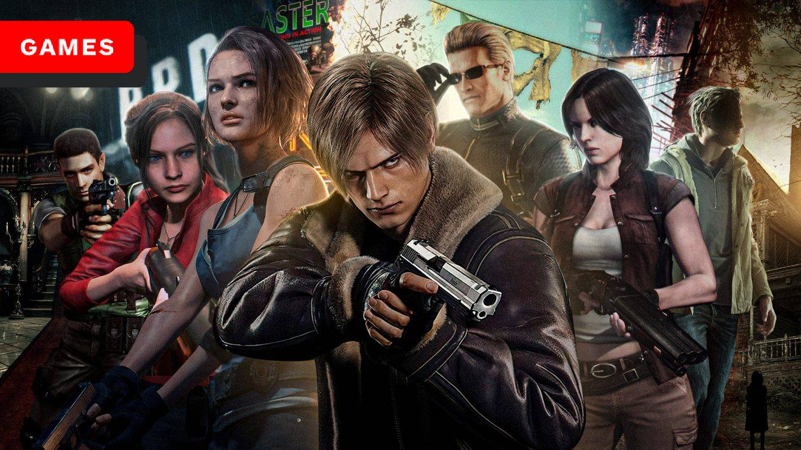
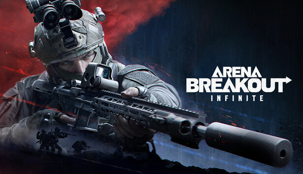

Saga Resident Evil
A saga Resident Evil é uma das franquias mais icônicas do gênero survival horror. Criada pela Capcom, a série começou em 1996 e segue a história de diferentes personagens lidando com apocalipses zumbis, monstros e conspirações envolvendo corporações e bio-terrorismo. Os jogos misturam ação, exploração e resolução de puzzles, com uma forte ênfase na sobrevivência em ambientes apocalípticos. Ao longo dos anos, a série evoluiu, indo de jogos com perspectiva fixa para câmeras mais dinâmicas e até mecânicas de ação em jogos mais recentes. O foco principal está sempre nas ameaças biológicas e no uso de recursos limitados para sobreviver.
DayZ

DayZ é um jogo multiplayer online de sobrevivência, inicialmente mod de Arma 2, que foi lançado como um jogo independente. Ambientado em um mundo aberto pós-apocalíptico, os jogadores assumem o papel de sobreviventes em uma terra infestada por zumbis, onde o maior inimigo não é apenas os mortos-vivos, mas outros jogadores. A ênfase está em caçar recursos, como comida, água e armas, enquanto lida com a saúde do personagem (doenças, ferimentos, fome). A dinâmica de PvP (jogador contra jogador) é intensa, já que alianças podem ser feitas ou traições podem acontecer a qualquer momento.
Arena Breakout Infinite
Arena Breakout Infinite é um jogo de tiro e sobrevivência focado em batalhas intensas e combate PvP. Em um cenário futurista, ele combina elementos de battle royale com mecânicas de looting e progressão. O jogo foca em sessões de combate onde os jogadores, ao entrar na arena, precisam enfrentar inimigos e sair vivos, coletando equipamentos e recursos durante o combate. É como uma mistura de jogos de tiro mais tradicionais com um componente de survival e estratégia, onde a cada partida, os jogadores enfrentam desafios constantes e a tensão de que a qualquer momento podem ser eliminados.